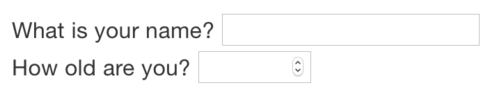

29 R Markdown formats
29.1 Introduction
So far you’ve seen R Markdown used to produce HTML documents. This chapter gives a brief overview of some of the many other types of output you can produce with R Markdown. There are two ways to set the output of a document:
Permanently, by modifying the YAML header:
title: "Viridis Demo" output: html_documentTransiently, by calling
rmarkdown::render()by hand:rmarkdown::render("diamond-sizes.Rmd", output_format = "word_document")This is useful if you want to programmatically produce multiple types of output.
RStudio’s knit button renders a file to the first format listed in its output field. You can render to additional formats by clicking the dropdown menu beside the knit button.

29.2 Output options
Each output format is associated with an R function. You can either write foo or pkg::foo. If you omit pkg, the default is assumed to be rmarkdown. It’s important to know the name of the function that makes the output because that’s where you get help. For example, to figure out what parameters you can set with html_document, look at ?rmarkdown::html_document.
To override the default parameter values, you need to use an expanded output field. For example, if you wanted to render an html_document with a floating table of contents, you’d use:
output:
html_document:
toc: true
toc_float: trueYou can even render to multiple outputs by supplying a list of formats:
output:
html_document:
toc: true
toc_float: true
pdf_document: defaultNote the special syntax if you don’t want to override any of the default options.
29.3 Documents
The previous chapter focused on the default html_document output. There are a number of basic variations on that theme, generating different types of documents:
pdf_documentmakes a PDF with LaTeX (an open source document layout system), which you’ll need to install. RStudio will prompt you if you don’t already have it.word_documentfor Microsoft Word documents (.docx).odt_documentfor OpenDocument Text documents (.odt).rtf_documentfor Rich Text Format (.rtf) documents.md_documentfor a Markdown document. This isn’t typically useful by itself, but you might use it if, for example, your corporate CMS or lab wiki uses markdown.github_document: this is a tailored version ofmd_documentdesigned for sharing on GitHub.
Remember, when generating a document to share with decision makers, you can turn off the default display of code by setting global options in the setup chunk:
knitr::opts_chunk$set(echo = FALSE)For html_documents another option is to make the code chunks hidden by default, but visible with a click:
output:
html_document:
code_folding: hide29.4 Notebooks
A notebook, html_notebook, is a variation on a html_document. The rendered outputs are very similar, but the purpose is different. A html_document is focused on communicating with decision makers, while a notebook is focused on collaborating with other data scientists. These different purposes lead to using the HTML output in different ways. Both HTML outputs will contain the fully rendered output, but the notebook also contains the full source code. That means you can use the .nb.html generated by the notebook in two ways:
You can view it in a web browser, and see the rendered output. Unlike
html_document, this rendering always includes an embedded copy of the source code that generated it.You can edit it in RStudio. When you open an
.nb.htmlfile, RStudio will automatically recreate the.Rmdfile that generated it. In the future, you will also be able to include supporting files (e.g..csvdata files), which will be automatically extracted when needed.
Emailing .nb.html files is a simple way to share analyses with your colleagues. But things will get painful as soon as they want to make changes. If this starts to happen, it’s a good time to learn Git and GitHub. Learning Git and GitHub is definitely painful at first, but the collaboration payoff is huge. As mentioned earlier, Git and GitHub are outside the scope of the book, but there’s one tip that’s useful if you’re already using them: use both html_notebook and github_document outputs:
output:
html_notebook: default
github_document: defaulthtml_notebook gives you a local preview, and a file that you can share via email. github_document creates a minimal md file that you can check into git. You can easily see how the results of your analysis (not just the code) change over time, and GitHub will render it for you nicely online.
29.5 Presentations
You can also use R Markdown to produce presentations. You get less visual control than with a tool like Keynote or PowerPoint, but automatically inserting the results of your R code into a presentation can save a huge amount of time. Presentations work by dividing your content into slides, with a new slide beginning at each first (#) or second (##) level header. You can also insert a horizontal rule (***) to create a new slide without a header.
R Markdown comes with three presentation formats built-in:
ioslides_presentation- HTML presentation with ioslidesslidy_presentation- HTML presentation with W3C Slidybeamer_presentation- PDF presentation with LaTeX Beamer.
Two other popular formats are provided by packages:
revealjs::revealjs_presentation- HTML presentation with reveal.js. Requires the revealjs package.rmdshower, https://github.com/MangoTheCat/rmdshower, provides a wrapper around the shower, https://github.com/shower/shower, presentation engine
29.6 Dashboards
Dashboards are a useful way to communicate large amounts of information visually and quickly. Flexdashboard makes it particularly easy to create dashboards using R Markdown and a convention for how the headers affect the layout:
- Each level 1 header (
#) begins a new page in the dashboard. - Each level 2 header (
##) begins a new column. - Each level 3 header (
###) begins a new row.
For example, you can produce this dashboard:

Using this code:
---
title: "Diamonds distribution dashboard"
output: flexdashboard::flex_dashboard
---
```{r setup, include = FALSE}
library(ggplot2)
library(dplyr)
knitr::opts_chunk$set(fig.width = 5, fig.asp = 1/3)
```
## Column 1
### Carat
```{r}
ggplot(diamonds, aes(carat)) + geom_histogram(binwidth = 0.1)
```
### Cut
```{r}
ggplot(diamonds, aes(cut)) + geom_bar()
```
### Colour
```{r}
ggplot(diamonds, aes(color)) + geom_bar()
```
## Column 2
### The largest diamonds
```{r}
diamonds %>%
arrange(desc(carat)) %>%
head(100) %>%
select(carat, cut, color, price) %>%
DT::datatable()
```Flexdashboard also provides simple tools for creating sidebars, tabsets, value boxes, and gauges. To learn more about flexdashboard visit http://rmarkdown.rstudio.com/flexdashboard/.
29.7 Interactivity
Any HTML format (document, notebook, presentation, or dashboard) can contain interactive components.
29.7.1 htmlwidgets
HTML is an interactive format, and you can take advantage of that interactivity with htmlwidgets, R functions that produce interactive HTML visualisations. For example, take the leaflet map below. If you’re viewing this page on the web, you can drag the map around, zoom in and out, etc. You obviously can’t do that in a book, so rmarkdown automatically inserts a static screenshot for you.
library(leaflet)
leaflet() %>%
setView(174.764, -36.877, zoom = 16) %>%
addTiles() %>%
addMarkers(174.764, -36.877, popup = "Maungawhau") 
The great thing about htmlwidgets is that you don’t need to know anything about HTML or JavaScript to use them. All the details are wrapped inside the package, so you don’t need to worry about it.
There are many packages that provide htmlwidgets, including:
dygraphs, http://rstudio.github.io/dygraphs/, for interactive time series visualisations.
DT, http://rstudio.github.io/DT/, for interactive tables.
threejs, https://github.com/bwlewis/rthreejs for interactive 3d plots.
DiagrammeR, http://rich-iannone.github.io/DiagrammeR/ for diagrams (like flow charts and simple node-link diagrams).
To learn more about htmlwidgets and see a more complete list of packages that provide them visit http://www.htmlwidgets.org/.
29.7.2 Shiny
htmlwidgets provide client-side interactivity — all the interactivity happens in the browser, independently of R. On one hand, that’s great because you can distribute the HTML file without any connection to R. However, that fundamentally limits what you can do to things that have been implemented in HTML and JavaScript. An alternative approach is to use shiny, a package that allows you to create interactivity using R code, not JavaScript.
To call Shiny code from an R Markdown document, add runtime: shiny to the header:
title: "Shiny Web App"
output: html_document
runtime: shinyThen you can use the “input” functions to add interactive components to the document:
library(shiny)
textInput("name", "What is your name?")
numericInput("age", "How old are you?", NA, min = 0, max = 150)
You can then refer to the values with input$name and input$age, and the code that uses them will be automatically re-run whenever they change.
I can’t show you a live shiny app here because shiny interactions occur on the server-side. This means that you can write interactive apps without knowing JavaScript, but you need a server to run them on. This introduces a logistical issue: Shiny apps need a Shiny server to be run online. When you run shiny apps on your own computer, shiny automatically sets up a shiny server for you, but you need a public facing shiny server if you want to publish this sort of interactivity online. That’s the fundamental trade-off of shiny: you can do anything in a shiny document that you can do in R, but it requires someone to be running R.
Learn more about Shiny at http://shiny.rstudio.com/.
29.8 Websites
With a little additional infrastructure you can use R Markdown to generate a complete website:
Put your
.Rmdfiles in a single directory.index.Rmdwill become the home page.Add a YAML file named
_site.ymlprovides the navigation for the site. For example:name: "my-website" navbar: title: "My Website" left: - text: "Home" href: index.html - text: "Viridis Colors" href: 1-example.html - text: "Terrain Colors" href: 3-inline.html
Execute rmarkdown::render_site() to build _site, a directory of files ready to deploy as a standalone static website, or if you use an RStudio Project for your website directory. RStudio will add a Build tab to the IDE that you can use to build and preview your site.
Read more at http://rmarkdown.rstudio.com/rmarkdown_websites.html.
29.9 Other formats
Other packages provide even more output formats:
The bookdown package, https://github.com/rstudio/bookdown, makes it easy to write books, like this one. To learn more, read Authoring Books with R Markdown, by Yihui Xie, which is, of course, written in bookdown. Visit http://www.bookdown.org to see other bookdown books written by the wider R community.
The prettydoc package, https://github.com/yixuan/prettydoc/, provides lightweight document formats with a range of attractive themes.
The rticles package, https://github.com/rstudio/rticles, compiles a selection of formats tailored for specific scientific journals.
See http://rmarkdown.rstudio.com/formats.html for a list of even more formats. You can also create your own by following the instructions at http://rmarkdown.rstudio.com/developer_custom_formats.html.
29.10 Learning more
To learn more about effective communication in these different formats I recommend the following resources:
To improve your presentation skills, I recommend Presentation Patterns, by Neal Ford, Matthew McCollough, and Nathaniel Schutta. It provides a set of effective patterns (both low- and high-level) that you can apply to improve your presentations.
If you give academic talks, I recommend reading the Leek group guide to giving talks.
I haven’t taken it myself, but I’ve heard good things about Matt McGarrity’s online course on public speaking: https://www.coursera.org/learn/public-speaking.
If you are creating a lot of dashboards, make sure to read Stephen Few’s Information Dashboard Design: The Effective Visual Communication of Data. It will help you create dashboards that are truly useful, not just pretty to look at.
Effectively communicating your ideas often benefits from some knowledge of graphic design. The Non-Designer’s Design Book is a great place to start.